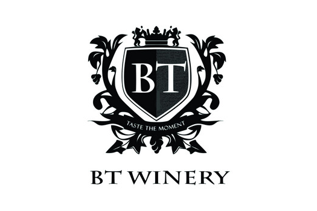
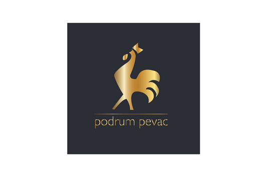
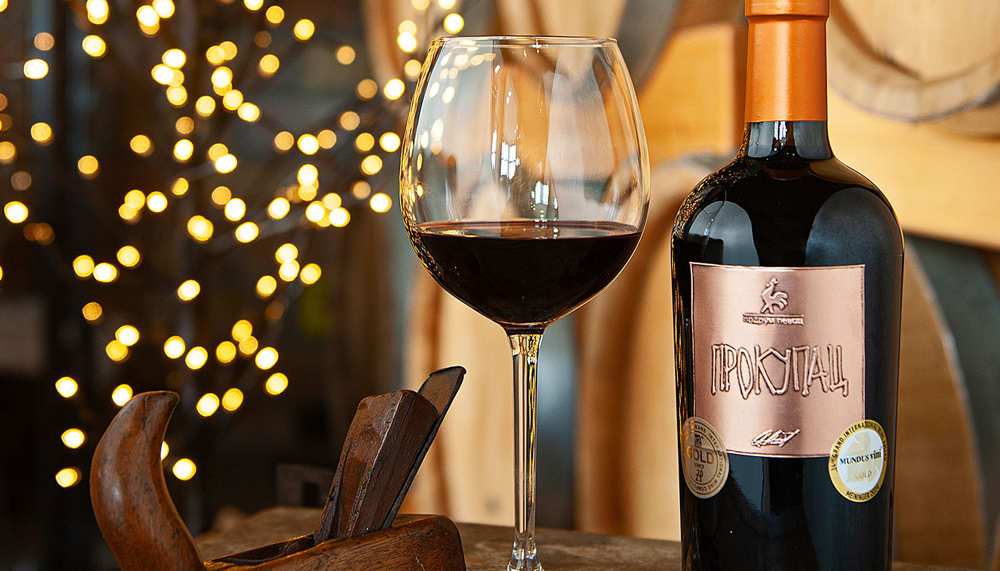
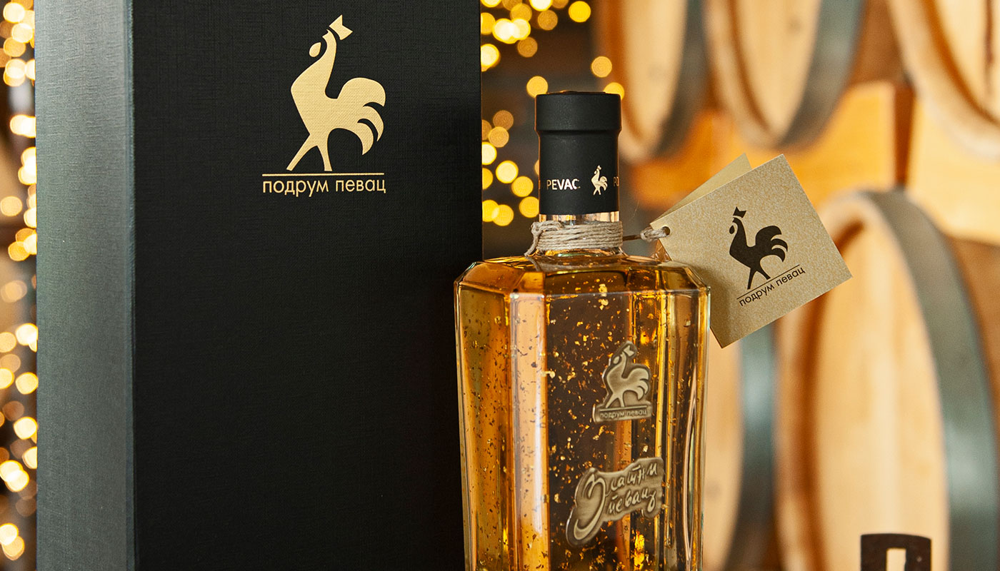
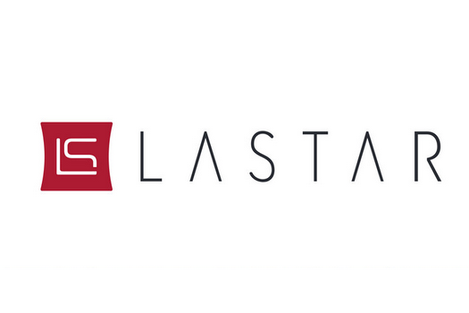
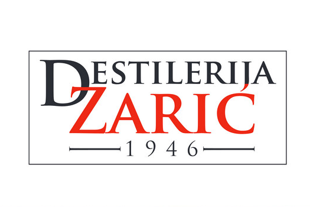
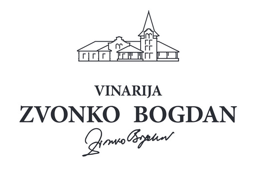
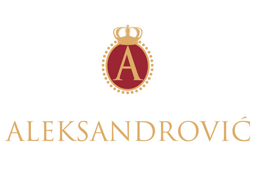

Europe's Best-Kept Wine Secret
ヨーロッパが秘める最上のワインの産地
Serbian viticulture has deep historical roots. It was Roman Emperor Probus — born in Sirmium, today's Sremska Mitrovica — who in 280 AD lifted the ban on wine production outside Italy and planted the first vineyards on the slopes of Fruška Gora. During the Nemanjić dynasty (12th–14th century), viticulture flourished across the country. Today, Serbia has nearly 70,000 hectares of vineyards and around 500 private registered wineries producing wines in all styles.
What makes Serbian wine truly distinctive is its rich range of indigenous grape varieties — Prokupac, Tamjanika, Vranac, Morava — cultivated across nine winemaking regions from Fruška Gora and Subotica in the north to Šumadija and Župa in the south. These varieties offer flavors and aromas that are entirely new to the Japanese palate.
Beyond wine, Serbia is home to Rakija — a fruit brandy distilled from plums, quinces, pears and apricots. Rakija is the cornerstone of Serbian culture and hospitality, crafted with the same dedication as the finest European spirits.
セルビアのブドウ栽培の歴史は古代ローマ時代に遡ります。現在のスレムスカ・ミトロヴィツァに生まれたローマ皇帝プロブスは、280年にイタリア以外でのワイン生産禁止令を解除し、フルシュカゴーラの山腹に初めてブドウを植えました。ネマニッチ朝（12〜14世紀）の時代に栽培は全土に広まり、現在セルビアには約70,000ヘクタールのブドウ畑と約500の民間ワイナリーが存在します。
セルビアワインの最大の魅力は、プロクパツ、タムヤニカ、ヴラナツ、モラヴァといった固有品種の存在です。北部のフルシュカゴーラ・スボティツァから南部のシュマディヤ・ジュパまで、9つのワイン産地でのみ栽培されるこれらの品種は、日本のワイン愛好家にとってまったく新しい味わいと香りを提供します。
ワインだけでなく、プラム・カリン・洋梨・アプリコットを原料とするフルーツブランデー「ラキヤ」もセルビアの誇りです。ラキヤはセルビアの文化とおもてなしの象徴であり、欧州最高水準の品質を誇ります。
Tokyo Big Sight
3-11-1 Ariake, Koto-ku, Tokyo
東京ビッグサイト
東京都江東区有明3-11-1

ProWine Tokyo 2026 — International Trade Fair for Wines and Spirits
Date
15–17 April 2026 (Wed.–Fri.)
Opening Hours
10:00 am – 5:00 pm
Venue
Tokyo Big Sight, East Hall
3-11-1 Ariake, Koto-ku, Tokyo
Website
www.prowine-tokyo.com
プロワイン東京2026 — ワイン＆スピリッツ国際見本市
開催日
2026年4月15日〜17日（水〜金）
開場時間
午前10時 〜 午後5時
会場
東京ビッグサイト、東展示棟
東京都江東区有明3-11-1
ウェブサイト
www.prowine-tokyo.com

We believe in our wines, because we believe in our grapes. BT Winery produces wines from grapes cultivated in our own vineyards in the very heart of Fruška Gora — where the Pannonian sun and the warm Mediterranean wind create ideal conditions for the vine. Our grandparents believed this region was something special. We prove they were not wrong.
We follow the most traditional and ancestral vinification methods, preserved in Fruška Gora over centuries. Five metres underground, surrounded by olive trees and vineyards, our modern wine cellar provides optimal conditions for the production and maturation of our wines.
フルシュカ・ゴーラの自社畑で丁寧に育てられたブドウから生まれるBTワイナリーのワイン。パノニア地方の太陽と温かい地中海の風が織りなす理想的な環境の中、数世紀にわたり受け継がれてきた伝統的な醸造技術を守り続けています。
オリーブの木とブドウ畑に囲まれた地下5メートルのワインセラーで、最高の熟成環境を提供しています。
Marslean, Pinot Noir, Vranac Gold, Vranac Silver, Longinus Cabernet Sauvignon — unfiltered, matured 2–4 years in oak barrels from the oldest vines.
マルスリーン、ピノ・ノワール、ヴラナツ・ゴールド、ヴラナツ・シルバー、ロンギヌス・カベルネ・ソーヴィニヨン — 無ろ過、2〜4年樽熟成。



Podrum Pevac is a family winery and distillery that preserves tradition while implementing modern technology — resulting in refined tastes of spirits and quality wine. Founded in 2008, today it produces over twenty flavors of spirits and liqueur in over a hundred different packages.
Its world-renowned premium product "Zlatni Pevac" is an aged quince brandy adorned with 23-carat edible gold leaves — a symbol of Serbian craftsmanship at its finest.
ポドルム・ペヴァツは、伝統を守りながら最新技術を取り入れた家族経営のワイナリー＆蒸留所です。2008年の創業以来、20種類以上のスピリッツとリキュールを100種類以上のパッケージで提供しています。
世界的に知られるプレミアム製品「ズラトニ・ペヴァツ」は、23カラットの食用金箔を施した熟成カリンブランデーで、セルビアの職人技の粋です。
USA, Australia, Azerbaijan, Montenegro, BiH, N. Macedonia, Slovenia, Bulgaria, Germany, Austria, Switzerland, Denmark, Netherlands, France
米国、オーストラリア、アゼルバイジャン、モンテネグロ、ボスニア・ヘルツェゴビナ、北マケドニア、スロベニア、ブルガリア、ドイツ、オーストリア、スイス、デンマーク、オランダ、フランス






Lastar Winery builds its identity on the unique terroir of the Levač region — rich vineyard soil and a wine tradition dating back to the 16th century. Founded in 2013 with 32 hectares of vineyards, it is one of the most modern wineries in Serbia.
The similarity of the Levač terroir with Burgundy is no coincidence — Chardonnay and Pinot Noir deliver their finest expression here. Pinot Sofijin Izbor holds the highest Decanter rating ever given to a Serbian Pinot Noir.
ラスタール・ワイナリーは、16世紀から続くワイン造りの伝統と豊かなテロワールを誇るレヴァチ地方に根ざしています。2013年設立、32ヘクタールの自社畑を所有するセルビア最新鋭のワイナリーの一つです。
ブルゴーニュに似たテロワールでは、シャルドネとピノ・ノワールが最良の表現を見せます。「ピノ・ソフィイン・イズボル」はデカンターでセルビアのピノ・ノワール史上最高評価を獲得しています。
Mundus Vini 2016 · Best Wine of Serbia Trophy, Mundus Vini 2020 (Sauvignon Viognier Triangl 2017) · Double Gold Medal, BIWC 2021 (Chardonnay, 95 pts)
ムンドゥス・ヴィニ2016 · セルビア最優秀ワイン賞（ムンドゥス・ヴィニ2020） · ダブルゴールドメダル（BIWC2021、シャルドネ95点）



Zarić Distillery was built on the premises of the once-famous "Povlen" brandy distillery. Through major investments, modern science and unwavering dedication to Serbian tradition, the Zarić family transformed it into the most modern rakija distillery in Southeast Europe.
With a production capacity of one million litres per year, Zarić Distillery showcases the finest fruit spirits of Serbia's Western highlands — each expression named as a poetic tribute to sensation and nature.
ザリチ蒸留所は、かつて名高かった「ポヴレン」ブランデー蒸留所の跡地に建てられました。多大な投資と現代の科学・技術とセルビアの伝統の融合により、東南ヨーロッパ最先端のラキヤ蒸留所へと生まれ変わりました。
年間100万リットルの生産能力を誇り、セルビア西部高原の最良のフルーツスピリッツを世界へ発信しています。
USA, Canada, China, Austria, Australia, Germany, Croatia, BiH, N. Macedonia, Slovenia, UK, Bulgaria, Switzerland
米国、カナダ、中国、オーストリア、オーストラリア、ドイツ、クロアチア、ボスニア・ヘルツェゴビナ、北マケドニア、スロベニア、英国、ブルガリア、スイス



More than twenty years ago, Zvonko Bogdan Winery began producing premium wines inspired by the unique microclimate of Palić lakes and the region's centuries-long grape-growing tradition. Located on the northern edge of Serbia, the winery produces wines of unmistakable international character.
The crown of their dedication — along with over a hundred awards — are three consecutive gold medals for signature wine Cuvée No.1 at the prestigious Decanter WWA. This is a rare distinction worldwide.
ズヴォンコ・ボグダン・ワイナリーは、パリチ湖のユニークな微気候とヴォイヴォディナの長いブドウ栽培の伝統に着想を得て、20年以上前にプレミアムワインの生産を開始しました。
100以上の受賞歴を誇り、その頂点は権威あるDecanter WWAにおける看板ワイン「キュヴェ No.1」の3年連続金メダル受賞。世界でも稀な栄誉です。
Export: Russia, Croatia, Montenegro, BiH, Austria, USA, Czech Republic, Switzerland, Germany, Denmark
輸出市場：ロシア、クロアチア、モンテネグロ、ボスニア・ヘルツェゴビナ、オーストリア、米国、チェコ共和国、スイス、ドイツ、デンマーク



Aleksandrović winery is situated in Vinča, 80km south of Belgrade, with 75 hectares of vineyards and annual production of 300,000 bottles. Multiple medals at Decanter, IWSC, Mundus Vini and AWC attest to the winery's uncompromising commitment to quality.
Their most treasured wine is "Trijumf" — produced according to an original 1932 blend recipe received from royal cellar master Zivan Tadić, winemaker of the Karađorđević Royal House before World War II. Trijumf was once served at several European royal courts.
アレクサンドロヴィチ・ワイナリーはベオグラードから南へ80kmのヴィンチャ村に位置し、75ヘクタールの自社畑から年間30万本のワインを生産しています。デカンター、IWSC、ムンドゥス・ヴィニ、AWCでの多数のメダルが品質への揺るぎないこだわりを証明しています。
最も誇り高きワイン「トリユンフ（凱旋）」は、第二次世界大戦前にカラジョルジェヴィチ王家のセラーマスターを務めたジヴァン・タディチから受け継いだ1932年のオリジナルブレンドレシピにより造られ、かつて欧州の王室の食卓を飾りました。
Served at European royal courts. Today, Aleksandrović wines reflect the climate, land and terroir of Serbia's finest winegrowing territory.
欧州王室の食卓を彩った歴史的白ワイン。アレクサンドロヴィチのワインはセルビアの気候、大地、テロワールを体現しています。